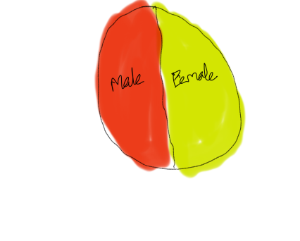

Design for Cholera Map Visualization:
1) Firstly, I have gone through the requirements of the project and gonethrough the the given datasets i.e. streets, pumps, deathdays and deathagessex files.
2) Next I made a analysis on how to draw all the graphs and how to start it. Took a overlook on the John Snow's map.
3) I used Visualization studio code and started uploading the packages and files. First I took the streets.json file and plotted the lines and displayed pumps from the pumps file, and plotted the deaths based on the gender and coordinates as given in the deaths_age_sex file, followed by streets names, warehouses and brewery.
4) The small circles in the cholera map indicates the number of deaths, the orange color indicates its male and the purple indicates its female, when we bring the mouse to the circles on the map then we can clearly see the age range of the died person.
5) Now I have drawn the timeline graph, the data given for the graph is not suffiencient for the question asked, so I made some changes to the csv file and modified it as per the requirement in the question.
6) I have drawn the timeline graph in such a way when we move the mouse to each day it indicates all the deaths before and including that day and the deaths on that day, when we move the mouse to a particular day in the timeline graph, then we can see the deaths on the map too.
7) From the deaths_age_sex file I have extracted the total number of females and males and made an another csv file named gender_distribution,and used that file to draw a pie chart indicating the number of deaths for total number of females and males.

8) From the same deaths_age_sex file I have extracted the age range and the number of deaths in the age range, and made a csv file names age_range.
9) First I thought to plot a histogram which shows the age group range and percentage of deaths in each group range, but later I thought Pie chart would be much helpful to show the age range with the percentage of deaths.
10) By clicking on the cholera map we can zoom in and out and can be set back to original postion by refresing the page.
11) The overall page shows the cholera map with the streetname, deaths, pumps, warehouse and brewery and a timeline graph indicating the number of deaths on each day, a graph indicating the number of deaths based on gender and a pie chart shows the percentage of deaths by age group.
Framework & Tools:
1) D3.js
2) HTML
3) CSS
4) javascript
References:
https://www.datasciencelearner.com/draw-json-bar-chart-using-d3-js/amp/
https://www.w3schools.com/cssref/func_rgba.asp
https://www.tutorialsteacher.com/d3js/create-pie-chart-using-d3js